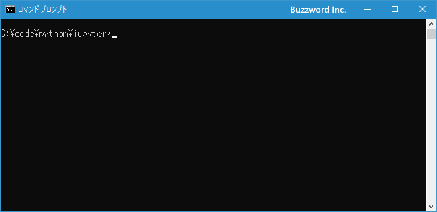
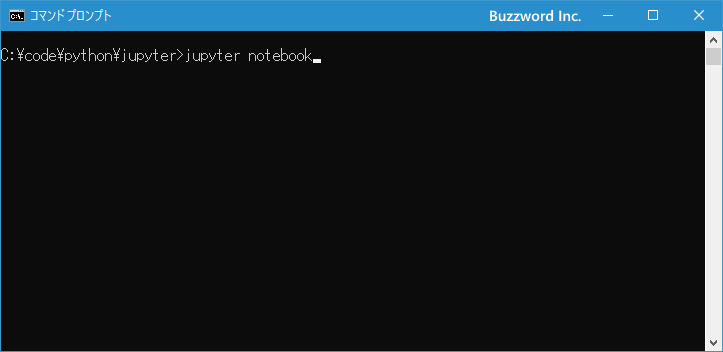
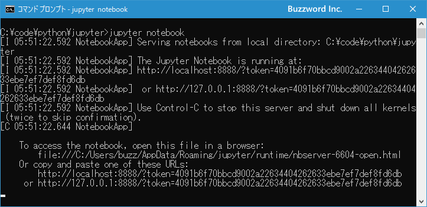
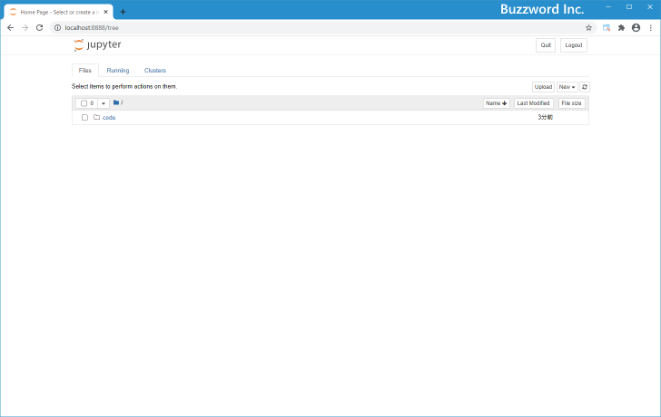
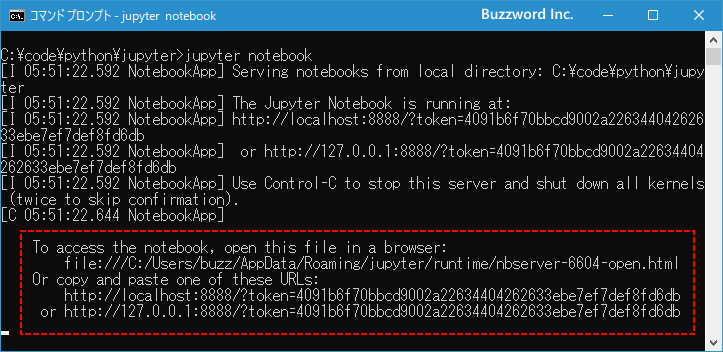
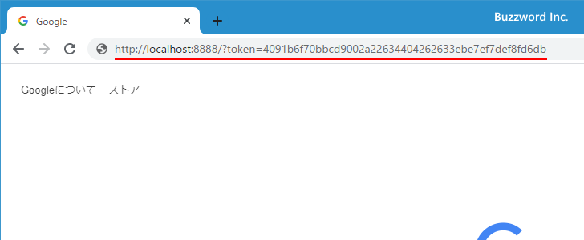
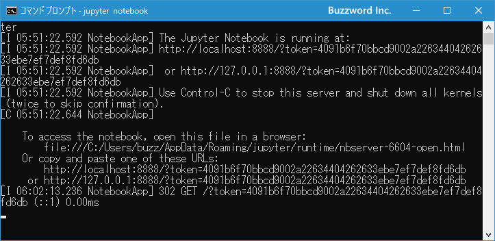
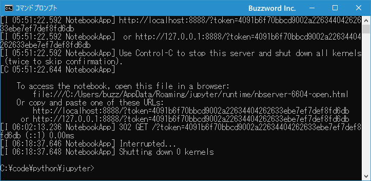
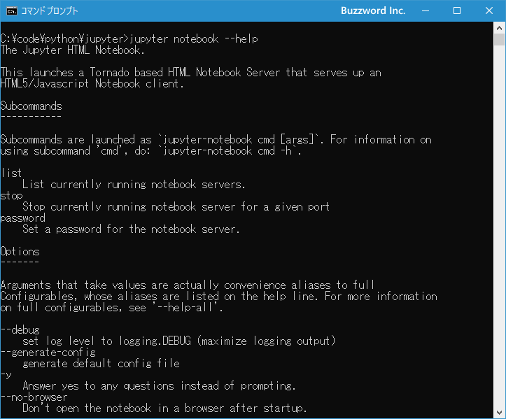
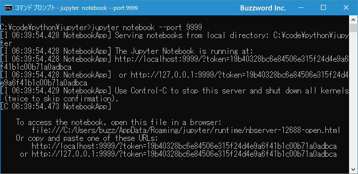

Jupyter Notebookの起動と停止
Jupyter Notebook を利用する最初の一歩は Notebook Server を起動することです。起動すると専用の Web サーバがローカルで起動し、そのあとでブラウザから Web サーバへアクセスすることで Python のプログラムを実行したり、実行結果の保存を行ったりすることができます。ここでは Jupyter Notebook を起動する方法および停止する方法について解説します。
Jupyter Notebookを起動する
Jupyter Notebook の起動はコマンドプロンプトから行います。コマンドプロンプトを起動してください。

起動するディレクトリはどこからでもいいのですが、起動したあと現在のディレクトリに含まれるファイルやディレクトリの一覧が表示されます。
それでは次のように実行してください。
jupyter notebook

Web サーバが起動します。コマンドプロンプトには次のように表示されます。

※ Web サーバが起動しているあいだはコマンドプロンプトはこのままにしておいて下さい。あとで Web サーバを停止するときに使用します。
Web サーバが起動したあと、拡張子 .html に関連付けられているアプリケーションがブラウザだった場合、自動的にブラウザが起動し Notebook Dashboard の画面が表示されます。

拡張子 .html に関連付けられているアプリケーションがブラウザ以外だった場合や、何らかの理由でブラウザが起動しなかった場合は、別途ブラウザを起動したうえでコマンドプロンプトに表示されている次の 3 つの URL のいずれかへアクセスしてください。

今回は 2 番目の表示されている URL へアクセスしてみます。ブラウザのアドレスバーへ入力してください。

Notebook Dashboard の画面が表示されます。
Jupyter Notebookを停止する
Jupyter Notebook の利用が終わりましたら Jupyter Notebook を停止しておきます。起動するときに使用したコマンドプロンプトを表示してください。

※ Jupyter Notebook を利用するとコマンドプロンプトにログが都度出力されていくので、起動した直後とは画面に表示されている内容は変わっています。
コマンドプロンプト上で Ctrl + c キー を押してください。数秒経過したあとで次のように表示されます。

Jupyter Notebook の停止が完了しました。
Jupyter Notebookの起動オプション
Jupyter Notebook を起動するときのオプションが用意されています。オプションの一覧を確認するにはコマンドプロンプトから次のように実行してください。
jupyter notebook --help

非常に長いのですべてを記載するのは省略しますが、例えば Web サーバのポート番号をデフォルト 8888 から別の番号に変更したい場合は次のように起動します。
jupyter notebook --port 9999

他のオプションについても利用する機会があれば都度ご紹介していきます。
-- --
Jupyter Notebook を起動する方法および停止する方法について解説しました。
( Written by Tatsuo Ikura )

著者 / TATSUO IKURA
初心者～中級者の方を対象としたプログラミング方法や開発環境の構築の解説を行うサイトの運営を行っています。